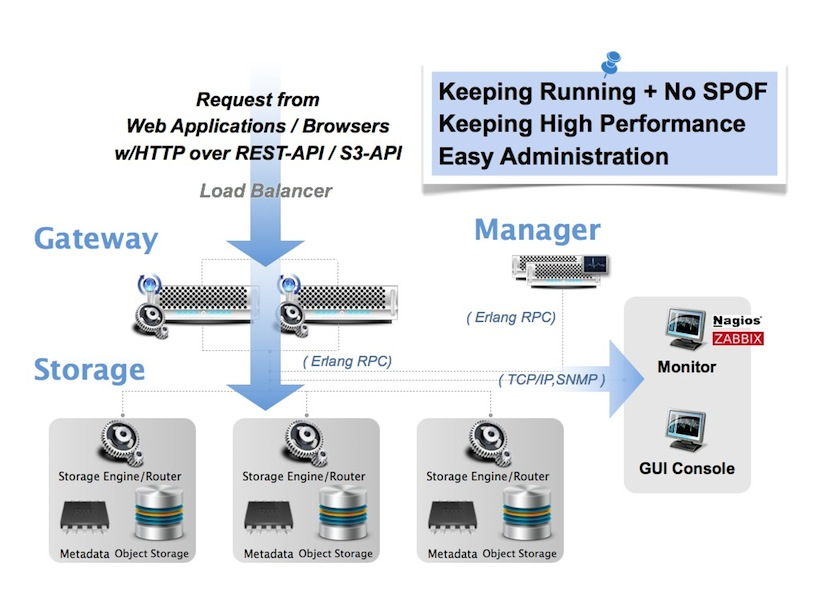

FAQ: LeoFS Fundamentals¶
What kind of storage is leofs?¶
LeoFS is a highly scalable, fault-tolerant object_storage for the Web. Significantly, LeoFS supports huge amount and various kind unstructured data such as photo, movie, document, log data and so on.
Operationally, LeoFS features multi-master replication with automated failover and built-in horizontal scaling via ConsistentHashing.
- Related Links:
What are typical uses for LeoFS?¶
If you are searching a storage system that is able to store huge amount and various kind of files such as photo, movie, log data and so on, LeoFS is suitable for that.
This is because LeoFS is a highly available, distributed storage system. Also, LeoFS can be used to store a lot of data efficiently, safely, and inexpensively.
- Related Links:
What is benefit for LeoFS users?¶
Advantage¶
LeoFS is supporting the following features:
- S3-API Support
- LeoFS is an Amazon S3 compatible storage system.
- Switch to LeoFS to decrease your cost from more expensive public-cloud solutions.
- Large Object Support
- LeoFS can handle files with more than GB
- Multi Data Center Replication
- LeoFS is a highly scalable, fault-tolerant distributed file system without |SPOF|.
- LeoFS's cluster can be viewed as ONE-HUGE storage. It consists of a set of loosely connected nodes.
- We can build a global scale storage system with easy operations
- High Performance without |SPOF|
- According to the original cache mechanism and sophisticated innternal architecture, LeoFS keeps high performance regardless of amount and kind of data without |SPOF|.
In near future, LeoFS is going to provide the powerful features with LeoFS v1.4, v1.5 and v2.0
- Hybrid Storage
[v1.0]S3-API and REST-API Support[v1.2]NFS v3 Support[v1.5]LeoFS' Native Client
- Reduction of Storage Costs
[v1.5]Erasure Code[v2.2]Data Deduplication
For Business Managers¶
- Storing confidential/sensitive data internally
- Saving cost to use commodity servers
- Increasing service level with speedy response
- Expanding business globally
For Administrators¶
- Easy to install with the packages
- Easy to operate with |LeoCenterDocs|
What is architecture of LeoFS?¶
We've been mainly focusing on High Availability, High Scalability and High Cost Performance Ratio since unstructured data such as images, movies and logs have been exponentially increasing day by day, and we needed to build a cloud storage that can handle all them.
LeoFS consists of 3 core components, LeoGateway, LeoStorage and LeoManager. The role of each component is clearly defined.

LeoGateway handles http-requests and http-responses from clients when using REST-API OR S3-API. Also, it has the built-in object-cache system.
LeoStorage handles GET, PUT and DELETE, Also it has replicator and recoverer in order to keep running and consistency.
LeoManager always monitors Gateway(s) and Storage(s). Manger monitors node-status and RING(logical routing-table) checksum to keep running and consistency.
Also, what we payed attention when we desined LeoFS are the following 3 things:
- To keep always running and No |SPOF|
- To keep high-performance, regardless of the kind and amount of data
- To provide easy administration, we already provide LeoFS CUI and GUI console.
Is there the roadmap of LeoFS?¶
We've published LeoFS milestones on LeoFS' GitHub. We may revise the milestones occasionally because there is a possibility to add new features or change priority of implementation. We'll keep them always updated.
What language is LeoFS written in?¶
LeoFS depends on Erlang, and some LeoFS' libraries are implemented by C/C++.
- Related Links: